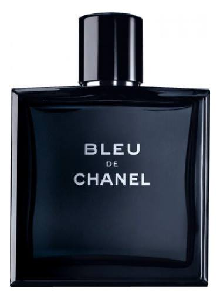

Locion: BLEU
El color azul marino muy oscuro, casi negro, le da una intensidad que contrasta con su suavidad y frescor. Chanel lo explica como la libertad que quieren transmitir en todos sus productos. El tapón redondo ¡sorpresa! está imantado. La forma cuadrada lo referencia como una eau de toilette masculina. El realce del contorno del frasco con una linea de luz de azul noche me parece sencillamente preciosa.
recomiendo a un hombre de gustos discretos y alegres, que le guste percibir su perfume pero que lo quiere mantener como si fuera una eau de parfum, sólo para él y las personas de su entorno privado. Si eres de los que les gusta “dejar rastro”, te va a saber a poco.
